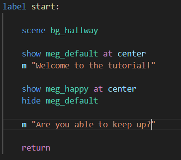
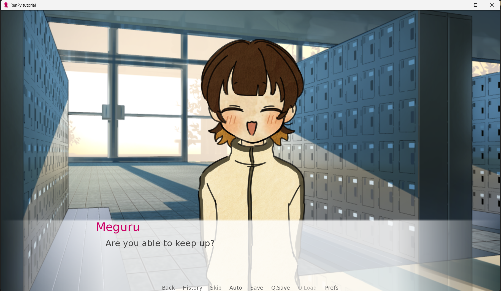
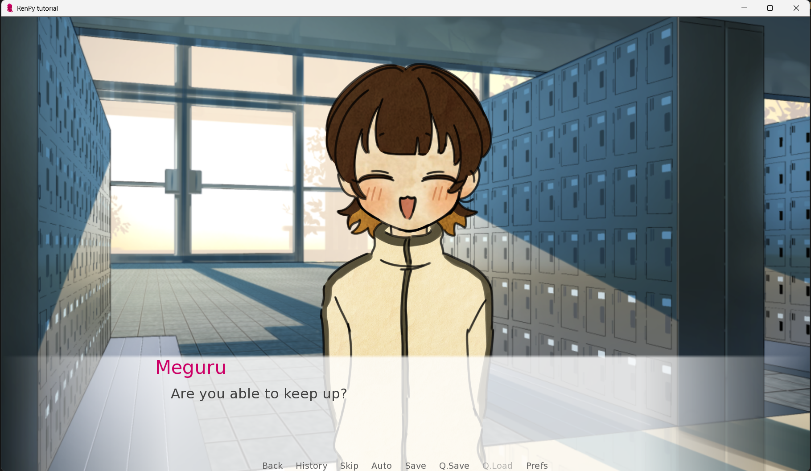
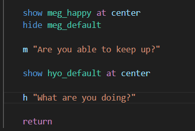
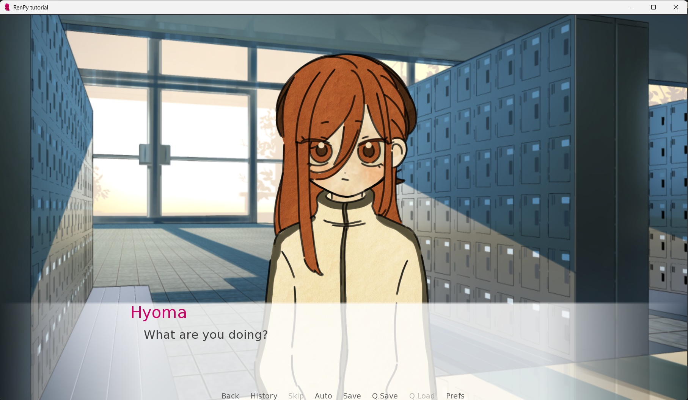
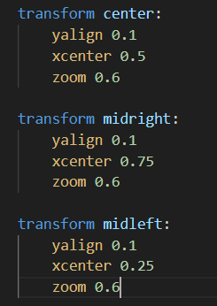
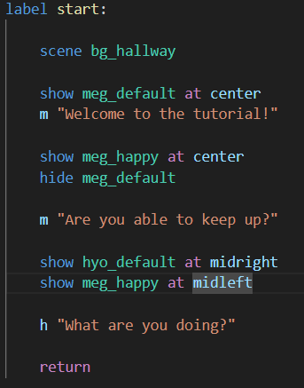
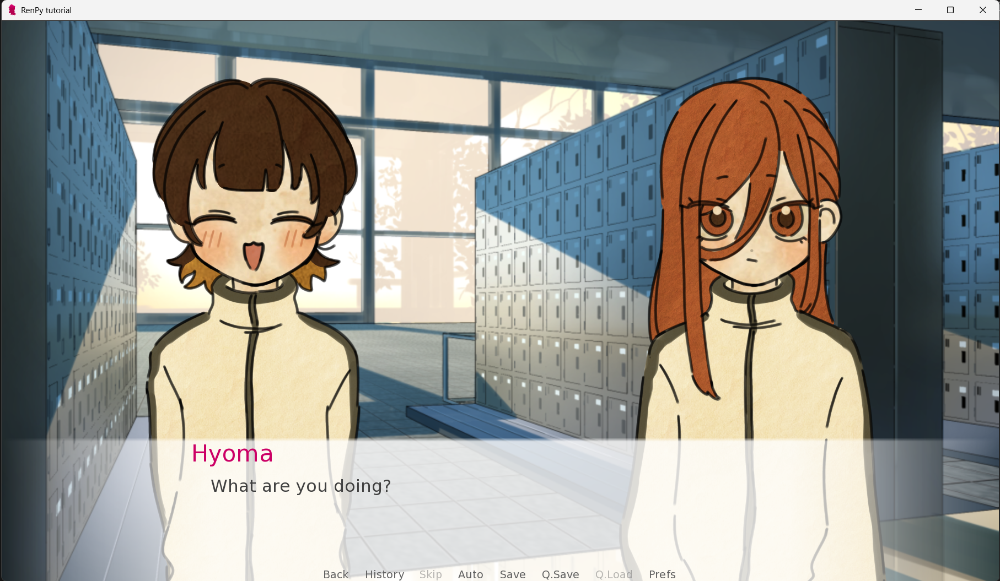
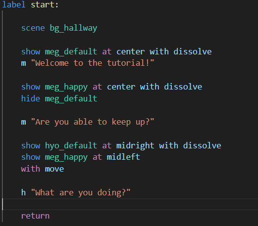

Trinn 1: Skriv dialog
Nå som du vet hvordan du putter inn bilder og hat definert katakteren din kan du starte å skrive historien din. forbokstaven til karakteren din "Dialogen din" (husk "")

Trinn 2: Ansiktsutrykk
Får å bytte ansiktsutrykk er det bare å bruke show bildet_ditt koden, men en viktig ting å huske er at du må hide forrigje_bildet_ditt. Dette er sånn at når spillet ditt har flere ansiktsutrykk, at det ikke blir flere lag av bilder oppå hverandre.
 

Trinn 3: Andre karakterer
Hvis du nå bruker det du har lært for å prøve å sette inn en ny karakter skjer dette:
 For å fikse dette trenger du denne koden under define karakter kodene:
Som du sikkert skjønner er center midten, midright høyre og midleft venstre. For å faktisk bruke dette på du putte det etter bildene dine.
Med bare det bør bildene dine se sånn ut:
Trinn 4: Fin pussing
En fin ting å putte in for finere transosjoner mellom bildene er dissolve og move. Dissolve lar bildene fade inn, noe som er fint å ha spesielt når karakteren din bytter ansiktsuttrykk, og move er fint å bruke når karakteren din beveger deg, hær er et eksempel på hvordan det kan bli brukt.
💡 Mini-quiz: Hva husker du?
1. Hvordan skriver du dialog?
2. Hva er viktig å huske når du har mer enn 1 karakter på skjermen?
3. Hva gjør dissolve?